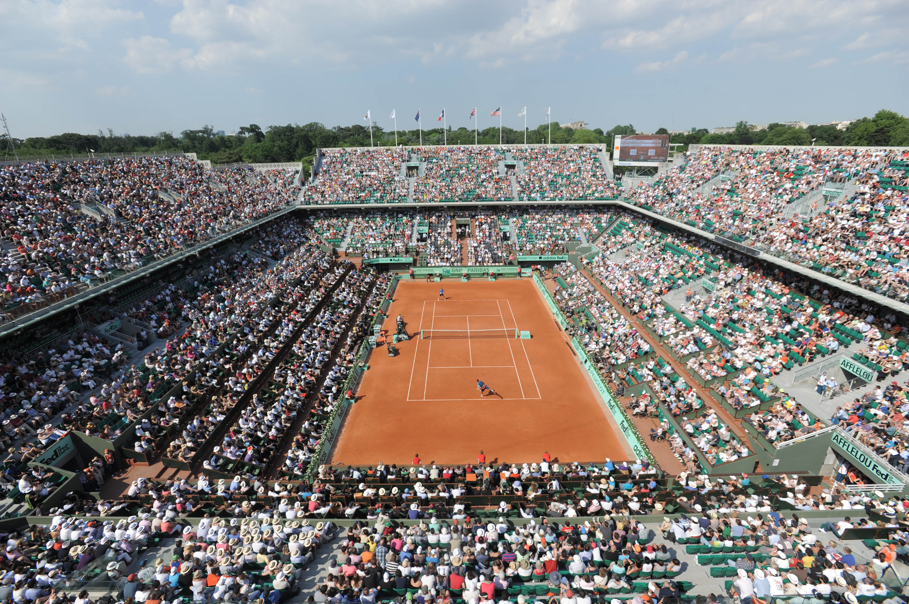

Roland Garros, sin techo antes de 2020
PARÍS -- La lluvia volvió a convertirse en protagonista en el polvo de ladrillo de París. Y reflotó una incertidumbre recurrente: ¿Cuándo llegará el techo a la pista central de Roland Garros?
La respuesta, de manos del propio director del torneo, Guy Forget, es que la variante indoor aún está lejos de ser una realidad.
Originalmente pautado para estrenarse en 2018, lo cierto es que el techo retráctil hoy recién se piensa para 2020.
"En otros países las cosas se dan más rápido. Pero confiamos que para entonces sí ya va a estar todo terminado", expuso Forget.
La comparación con otras legislaciones tiene que ver con que en Francia hubo continua resistencia al proyecto de renovación de Roland Garros, motivada por residentes locales, activistas y grupos ambientales (hay un jardín botánico en las cercanías del complejo).
Hoy en día, de hecho, el evento parisino se erige como el único Grand Slam sin herramientas para hacerle frente a los días de lluvia.
"Por fortuna -opuso Forget-, las lonas sobre la cancha se arman y desarman muy rápido. Así que confiamos en que vamos a poder terminar a tiempo la primera ronda".
"El clima para los próximos días es favorable. Pero si sigue lloviendo, probablemente muchos jugadores tengan que competir dos días seguidos. Sería una pena, pero los jugadores saben cómo son las reglas y lo aceptan".